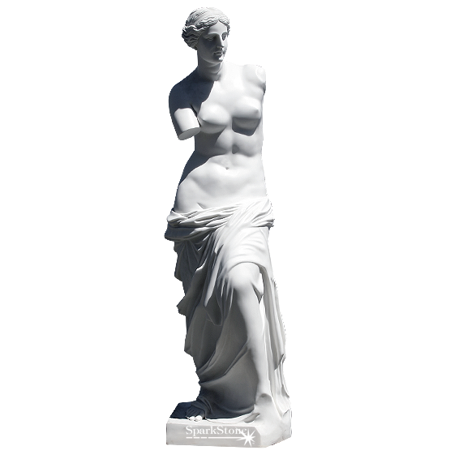
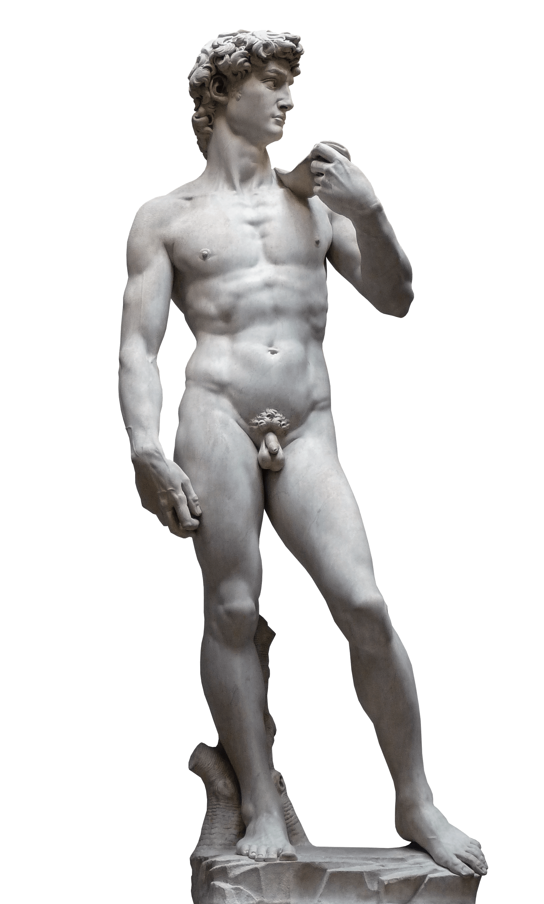

Esculturas
Esculturas Originalmente Gregas e Esculturas que seguiram o mesmo conceito, mesmo em épocas diferentes, levando em consideração a perfeição e simetria do corpo humano, valorizando traços finos e delicadas com a intenção de impressionar e trazer essa sensação de uniformidade ao olhar, comum em todas as estatuas feitas com esse estilo artístico, ao lado algumas das obras mais conhecidas do mundo:
- 
- 
-

-
PIETA
Data de Criação: 1475 - 1564
Artista: Michelangelo
Descrição:retrata a Virgem Maria segurando seu filho unigênito, Jesus Cristo -
VENUS DE MILO
Data de Criação: 100 - 130 A.C
Artista: Desconhecido
Descrição:Acredita-se que retrate Afrodite (Vênus para os romanos)
a deusa grega do amor e da beleza. -
DAVID
Data de Criação: 1501 - 1504
Artista: Michelangelo
Descrição:A estátua representa o herói bíblico Davi, um dos assuntos preferidos na arte de Florença -
O PENSADOR
Data de Criação: 1880 - 1902
Artista: Auguste Rodin
Descrição:"O Pensador". Originalmente chamado de O Poeta, era uma peça que fazia parte da encomenda feita pela comissão do Musée des Arts Décoratifs, em Paris para criar um portal monumental para atuar como a porta do museu
Pinturas inspiradas na Arte Grega
A pintura grega teve na cerâmica a sua maior representação. Entretanto, assim como em outras sociedades antigas, surge ainda na arte estatuária e como componente decorativo de estruturas arquitetônicas. Futuramente esse estilo de pintura foi e ainda é utilizado como referência e de fácil reconhecimento apresentando composições harmoniosas e detalhadas.Principais Características da Pintura Grega estão no Equilíbrio das formas, Harmonia nas cores e desenhos.


-
MÃOS DA CRIAÇÃO
Data de Criação: 2022
Artista: Filipe Ricardo
Descrição: retrata a Vida e a Morte a um dedo de distância, releitura de Criação de Adão -
CABEÇA DE DAVI
Data de Criação: 2022
Artista: Miriã Gonçalvez
Descrição: Representação da Estatua "DAVID" em tinta óleo -
OLIMPO
Data de Criação: desconhecida
Artista: desconhecido
Descrição: Representação dos Deuses da mitologia Grega -
CRIAÇÃO DE DAVI
Data de Criação: 1475 - 1564
Artista: Michelangelo
Descrição: Criação do primeiro homem de acordo com a Bíblia
Ceramica
A cerâmica grega entre o artesanato artístico deixado pelos Gregos, a cerâmica é a que tem um maior destaque, pois era uma mercadoria de primeira necessidade pelas múltiplas funções que possuía (serviço doméstico, usos artesanais e comerciais, apoio às cerimónias religiosas e fúnebres).O seu estudo é, entre o de todas as outras artes gregas (arquitectura e escultura), aquele que melhor documenta a evolução da plástica grega e também a evolução social, cultural e política da História da Grécia.


-
HÍDRIA
Data de Criação:360–350 a.C
Descrição:da cidade de Pesto. Museu do Louvre, guereiros se preparando para combate -
ÂNFORA
Data de Criação: 459 - 430 A.C
Descrição:mostrando a deusa Atena. Museu Arqueológico Nacional de Atenas. -
LUTRÓFORO
Data de Criação: 350 - 330 a.C
Artista: Michelangelo
Descrição:contando um caso de amor entre Zeus e Leda -
CRATERA
Data de Criação: 1200 - 1100 A.c
Artista: Auguste Rodin
Descrição:epresentação da Odisseia